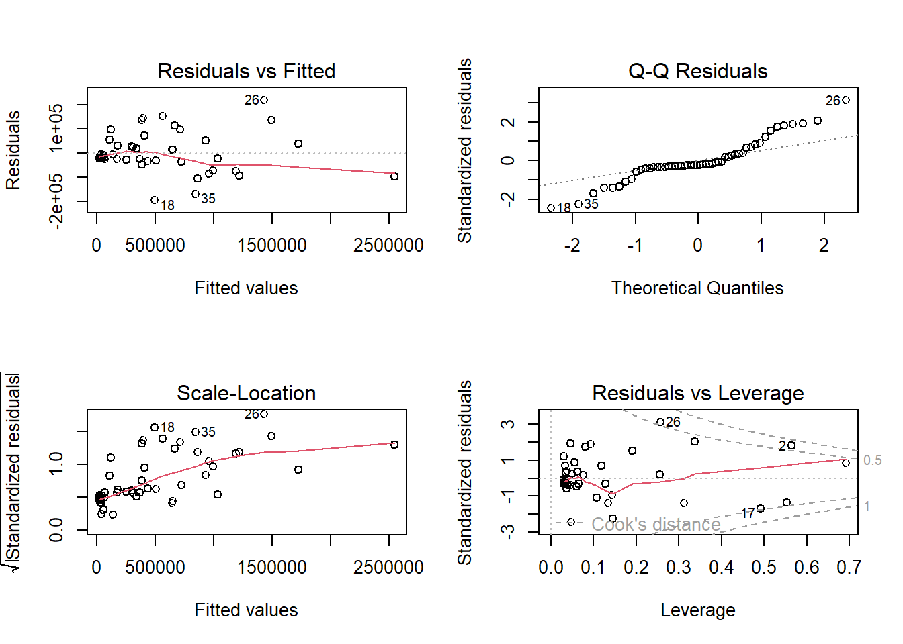
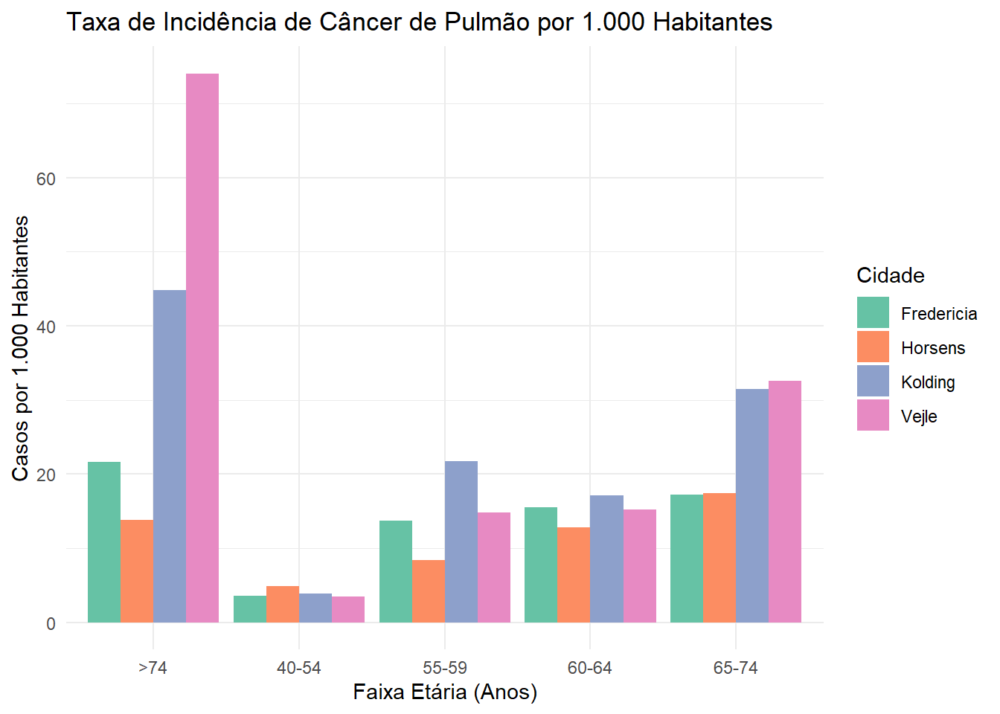

Exercício 1 - ANEEL e Exercício 2 - Dataset Danish Lung Cancer
Authors
Lorrayne Silva
Kammyla Landim
Paulo Emílio Vaz
Published
May 11, 2026
1 Exercício 1
A base de dados ModeloVigente_DadosCP62_2023.xlsx contém valores médios, considerando o período de 2018 a 2020, para as seguintes variáveis:
Custos Operacionais (PMSO / Despesas com Pessoal, Materiais, Serviços e Outros – em R$ 1.000,00)
Rede de alta tensão (Km)
Rede subterrânea (Km)
Rede de distribuição aérea (Km)
Mercado ponderado (MWh – Mercado Atendido em termos de potência)
Consumidores totais (unidades)
Consumidor Hora Interrompido - CHI (h – Tempo médio de consumidores sem energia)
Perdas Não Técnicas - PNT (MWh – Energia perdida considerando fraudes, gatos, etc.)
Essas variáveis estão disponíveis para 52 empresas brasileiras distribuidoras de energia elétrica.
A Agência Nacional de Energia Elétrica (ANEEL) está utilizando essas informações para calcular a eficiência operacional das empresas de distribuição para o ano de 2023 e para os próximos anos.
1.1 Objetivo do Desafio
O objetivo deste desafio é avaliar se os Custos Operacionais (PMSO) podem ser estimados a partir das demais variáveis. Deseja-se estimar o melhor modelo de regressão linear interpretável, considerando:
A relevância estatística das variáveis,
A capacidade preditiva do modelo.
Como fonte de referência, está disponível o código RMarkdown utilizado em sala de aula, baseado na base de dados “Boston housing”.
Code
## Exercício 1: Regressão Linear Múltipla - Eficiência Operacional (ANEEL)##Nesta etapa, o nosso objetivo é avaliar se os Custos Operacionais (PMSO) das 52 distribuidoras de energia podem ser explicados pelas suas características operacionais (tamanho da rede, mercado, perdas, etc.). ##Buscamos o melhor modelo de Regressão Linear Múltipla, equilibrando a capacidade preditiva e a simplicidade interpretativa. Para isso, as variáveis de identificação das empresas (DMU e Código) serão desconsideradas da modelagem.### 1.1 Carga e Preparação dos Dados
Code
# Carregando o pacote para leitura de planilhaslibrary(readxl)# Lendo a base de dadosdados_aneel <-read_excel("ModeloVigente_DadosCP62_2023.xlsx")# Visualizando a estrutura inicial dos dadoshead(dados_aneel)
1.2. Ajuste do Modelo Completo (Regressão Linear Múltipla): Nós iniciamos aplicando a Regressão Linear Múltipla clássica inserindo todas as variáveis explicativas disponíveis (excluindo apenas os identificadores textuais, como já discutimos). O objetivo foi criar uma “linha de base” para entender como todas as forças atuavam juntas sobre o Custo Operacional (PMSO).
Code
# Ajustando o modelo completo (Prevendo PMSO e ignorando DMU e Codigo)modelo_completo <-lm(PMSO ~ . - DMU - Codigo, data = dados_aneel)# Visualizando os resultados do modelo completosummary(modelo_completo)
Call:
lm(formula = PMSO ~ . - DMU - Codigo, data = dados_aneel)
Residuals:
Min 1Q Median 3Q Max
-195964 -27080 -17861 30823 224701
Coefficients:
Estimate Std. Error t value Pr(>|t|)
(Intercept) 2.171e+04 1.569e+04 1.384 0.17334
`rede alta` -3.937e+01 1.651e+01 -2.384 0.02148 *
`rede subterranea` 2.147e+01 1.997e+01 1.075 0.28824
`rede aerea` 2.896e+00 5.632e-01 5.142 6.02e-06 ***
mercadoP 3.662e-02 1.069e-02 3.426 0.00134 **
cons 9.304e-02 3.397e-02 2.739 0.00886 **
CHI 3.484e-04 1.780e-03 0.196 0.84572
PNT 1.914e-01 3.543e-02 5.403 2.52e-06 ***
---
Signif. codes: 0 '***' 0.001 '**' 0.01 '*' 0.05 '.' 0.1 ' ' 1
Residual standard error: 82120 on 44 degrees of freedom
Multiple R-squared: 0.9798, Adjusted R-squared: 0.9766
F-statistic: 304.9 on 7 and 44 DF, p-value: < 2.2e-16
1.3. Análise da Relevância Estatística (Modelo Completo): No caso do CHI e da Rede Subterrânea, o p-valor ficou muito acima do nível de significância de 0,05 (0,84 e 0,28, respectivamente). Isso significa que a probabilidade de estarmos observando essa relação apenas por acaso (ruído dos dados) é alta demais. Como o nível de dúvida superou nosso limite de segurança, falhamos em rejeitar a hipótese nula. Portanto, concluímos que não há evidências estatísticas de que essas variáveis impactem os custos operacionais e decidimos excluí-las para manter o modelo parcimonioso e confiável.
No sumário acima, é possível identificar que as outras variáveis passam no teste de significância, sendo que a PNT e a Rede Aérea são as que apresentam o maior grau de significância estatística (p < 0,001, indicados pelos códigos visuais ***).
No bloco seguinte, removemos manualmente as variáveis não significativas e validamos essa escolha através do teste de diferença de Deviance (ANOVA), conforme a metodologia apresentada na Aula 03 (Slide 3).
Code
# Ajustando o modelo reduzido (removendo 'rede subterranea' e 'CHI')modelo_reduzido <-lm(PMSO ~`rede alta`+`rede aerea`+ mercadoP + cons + PNT, data = dados_aneel)# Resumo do modelo reduzidosummary(modelo_reduzido)
# Comparação de Desvios (Deviance / ANOVA)anova(modelo_reduzido, modelo_completo)
Analysis of Variance Table
Model 1: PMSO ~ `rede alta` + `rede aerea` + mercadoP + cons + PNT
Model 2: PMSO ~ (DMU + Codigo + `rede alta` + `rede subterranea` + `rede aerea` +
mercadoP + cons + CHI + PNT) - DMU - Codigo
Res.Df RSS Df Sum of Sq F Pr(>F)
1 46 3.0467e+11
2 44 2.9670e+11 2 7972199165 0.5911 0.558
1.4 Seleção de Variáveis e Capacidade Preditiva:
Para obter o novo modelo acima, removemos manualmente as variáveis não significativas. Para validar essa remoção, aplicamos o teste de Análise de Variância (ANOVA), que avalia a diferença de desvios (Deviance) entre os dois modelos.
O teste ANOVA retornou um valor-p alto (p > 0.05), o que indica que a remoção das variáveis “Rede Subterrânea” e “CHI” não causou uma perda significativa de qualidade no ajuste. Como o p-valor do modelo ficou em 0,558 não rejeitamos a hipótese nula (os dois modelos são iguais em capacidade de explicação , ou seja as variáveis que retiramos não fazem falta).
O modelo_reduzido final atende aos objetivos do desafio:
Relevância: Todas as variáveis mantidas (Rede de alta tensão, Rede aérea, Mercado, Consumidores e PNT) são altamente significativas (p < 0.05).
Capacidade Preditiva: O modelo reteve um \(R^2\) Ajustado de 0.977, demonstrando que 97,7% da variação nos custos (PMSO) é perfeitamente explicada por este conjunto reduzido de variáveis operacionais.
Code
# Dividindo a área de plotagem para mostrar 4 gráficos simultaneamentepar(mfrow =c(2, 2))# Plotando os gráficos de diagnóstico para o modelo escolhidoplot(modelo_reduzido)

Code
# Retornando a área de plotagem ao padrão originalpar(mfrow =c(1, 1))
2 Exercício 2
Utilizando R/RMarkdown, ajuste um modelo linear generalizado de Poisson para a base de dados danishlc.dat.
Esta base é composta pelo número de casos de câncer de pulmão em quatro cidades na Dinamarca entre os anos de 1968 e 1971.
As informações disponíveis são:
Número de casos (y)
Faixas etárias
População por faixas etárias
Cidade
Procure caracterizar as faixas etárias e as cidades que apresentam as maiores taxas da doença.
Faça uma análise dos resultados em um relatório sucinto. O relatório deve incluir:
Análise descritiva
Ajuste do modelo
Análise dos resíduos
Principais conclusões
2.1 Entrega
Elabore o seu relatório utilizando o RMarkdown e envie o documento em formato Word (.docx) ou PDF para avaliação pelo sistema minha.ufmg.
2.2 Questão 1: Carga, Preparação e Análise Descritiva dos Dados
Code
# Criando o data frame com os dados do desafiodanishlc <-data.frame(City =rep(c("Fredericia", "Horsens", "Kolding", "Vejle"), each =5),Age =rep(c("40-54", "55-59", "60-64", "65-74", ">74"), times =4),Pop =c(3059, 800, 710, 581, 509, 3083, 712, 625, 402, 290, 2867, 597, 526, 350, 223, 2914, 539, 461, 307, 189),Cases =c(11, 11, 11, 10, 11, 15, 6, 8, 7, 4, 11, 13, 9, 11, 10, 10, 8, 7, 10, 14))# Convertendo as variáveis explicativas para fatoresdanishlc$City <-as.factor(danishlc$City)danishlc$Age <-as.factor(danishlc$Age)# Calculando a Taxa Bruta de Incidência (por 1.000 habitantes)danishlc$Taxa <- (danishlc$Cases / danishlc$Pop) *1000# Visualizando o sumário descritivo dos dadossummary(danishlc)
City Age Pop Cases Taxa
Fredericia:5 >74 :4 Min. : 189.0 Min. : 4.00 Min. : 3.432
Horsens :5 40-54:4 1st Qu.: 389.0 1st Qu.: 8.00 1st Qu.:11.707
Kolding :5 55-59:4 Median : 560.0 Median :10.00 Median :15.339
Vejle :5 60-64:4 Mean : 987.2 Mean : 9.85 Mean :19.403
65-74:4 3rd Qu.: 734.0 3rd Qu.:11.00 3rd Qu.:21.652
Max. :3083.0 Max. :15.00 Max. :74.074
Code
library(ggplot2)ggplot(danishlc, aes(x = Age, y = Taxa, fill = City)) +geom_bar(stat ="identity", position ="dodge") +theme_minimal() +labs(title ="Taxa de Incidência de Câncer de Pulmão por 1.000 Habitantes",x ="Faixa Etária (Anos)",y ="Casos por 1.000 Habitantes",fill ="Cidade" ) +scale_fill_brewer(palette ="Set2")

Code
# Ajustando o modelo de Poisson com offset populacionalmodelo_poisson <-glm( Cases ~ City + Age, family =poisson(link ="log"), offset =log(Pop), data = danishlc)# Exibindo os resultados detalhados do modelosummary(modelo_poisson)
Call:
glm(formula = Cases ~ City + Age, family = poisson(link = "log"),
data = danishlc, offset = log(Pop))
Coefficients:
Estimate Std. Error z value Pr(>|z|)
(Intercept) -3.57882 0.19004 -18.832 < 2e-16 ***
CityHorsens -0.05664 0.20918 -0.271 0.786564
CityKolding 0.40221 0.19339 2.080 0.037543 *
CityVejle 0.39649 0.19865 1.996 0.045945 *
Age40-54 -2.15918 0.21821 -9.895 < 2e-16 ***
Age55-59 -0.84403 0.22867 -3.691 0.000223 ***
Age60-64 -0.79328 0.23350 -3.397 0.000680 ***
Age65-74 -0.35432 0.22821 -1.553 0.120509
---
Signif. codes: 0 '***' 0.001 '**' 0.01 '*' 0.05 '.' 0.1 ' ' 1
(Dispersion parameter for poisson family taken to be 1)
Null deviance: 147.943 on 19 degrees of freedom
Residual deviance: 14.484 on 12 degrees of freedom
AIC: 112.55
Number of Fisher Scoring iterations: 4
#| message: false
#| warning: false
# Extraindo as razões de taxas (exponencial dos coeficientes)
razao_taxas <- exp(coef(modelo_poisson))
# Calculando os Intervalos de Confiança (95%)
ic_razao_taxas <- exp(confint(modelo_poisson))
# Consolidando os resultados em uma tabela
tabela_interpretacao <- cbind(
`Razão de Taxas (RR)` = razao_taxas,
ic_razao_taxas
)
print(round(tabela_interpretacao, 4))}
#| message: false
#| warning: false
# Extraindo estatísticas de ajuste
deviance_residual <- modelo_poisson$deviance
graus_liberdade <- modelo_poisson$df.residual
# Calculando o p-valor do teste Qui-Quadrado
p_valor_ajuste <- pchisq(deviance_residual, df = graus_liberdade, lower.tail = FALSE)
cat("Deviance Residual:", round(deviance_residual, 4), "\n")
cat("Graus de Liberdade:", graus_liberdade, "\n")
cat("P-valor do Teste de Ajuste:", round(p_valor_ajuste, 4), "\n")